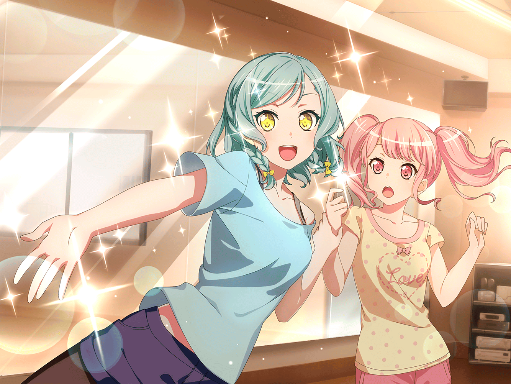

翌日
芸能事務所 レッスンスタジオ
彩
……
千聖
努力が必ず夢を叶えてくれるわけじゃないのよ
彩
（……でも私には他に、
どうやって夢を叶えたらいいのかわからないよ）
イヴ
アヤさん！
彩
イヴちゃん、麻弥ちゃん……おはよう！
２人も、来てくれたんだね
麻弥
千聖さんのあの言葉……ジブン達にも響きましたし、
不安にもなりました。
でも、やらないよりはやったほうがいいって思ったんです
イヴ
一度やりはじめたことを、途中でやめたりしたくありません！
己を貫き通す、それがブシドーです！
彩
私もね、他のやり方がわからなくて……
気づいたら、ここにいたんだ
日菜
あ、やっぱりみんないた！
絶対ここにいると思ったんだよね～
麻弥
日菜さん！
彩
日菜ちゃん……！ 来てくれたんだね！
ありがとう！
日菜
あー、えーっとさ。ここに来たのは理由があってさ。
あたしは、努力すれば夢は叶うとかって、よくわからないんだ
日菜
あたしは努力しなくってもすぐになんでもできちゃうから。
それに……できない人の気持ちがわからない
彩
ズバっと言うね……
日菜
ま、ホントのことだから。でも、麻弥ちゃんにバンドは他人と
組むものだって言われたから、
ここ数日、他人の存在っていうのを、意識するようになったんだ
日菜
そしたら……

日菜
すっごくね、おもしろいなって思ったの！
だって、他人ってわかんないことだらけなんだもん！
彩ちゃんみたいな人は特に！
彩
私……！？
日菜
彩ちゃんは何回練習しても同じところでミスするでしょ？
人よりもいっぱい練習してるのになんでだろう？ って。
あたしならできるのに、って。考えても全然わかんないんだ
彩
うっ……
日菜
他にもさ、なんでできないのにこんなにめげないんだろうとか、
彩ちゃんて普段何考えてるんだろう？ とか、考えれば考えるほど
全ッ然わかんなくて、おもしろくて！
日菜
わかんなくて、考えてばっかりいたら彩ちゃんのことが
すっごい好きになったの！ 他人、おもしろい！ チョー好き！
イヴ
ん～？ ヒナさんのお話、難しいです
日菜
彩ちゃんは、あたしにとって未知数の存在なの！
未知数だからこそ、おもしろくってずっと関わってたくなるの！
日菜
『他人』が、あたしの原動力になりつつある。
その最たる存在が彩ちゃんなんだよ
彩
私が、原動力……？
日菜
そ。だから、あたしはその面白さを感じるためにここにきてるし、
これからも、そうするつもり！
いやー、飽きないね、他人と過ごすのって！
彩
なんか……ちょっと、フクザツ？
私、多分、褒められてないよね？
日菜
うん、ほめてない！ でも、彩ちゃんはおもしろいから好き！
絶対めげないし、がんばるところもあたしと違って好き
日菜
もちろんイヴちゃんも麻弥ちゃんも、
あたしは千聖ちゃんも好きだよ。
あたしじゃない人たちって、どうしてこんなに面白いんだろう？？
麻弥
ジブンも、彩さんの努力家なところは
見習わなきゃって、思ってます。
それに、彩さんはジブンに勇気をくれましたから……
彩
私が？
麻弥
彩さん、言いましたよね。『自分なんか』なんて思わないで
夢をみてほしいって。自分に自信を持ってって
その言葉に、ジブンはすごく勇気をもらえたんです
麻弥
ひょんなことからこのバンドに入ることになって……
麻弥
ただの音楽オタクのジブンなんかが、
アイドルバンドにいていいのかって不安も
彩さんの言葉で全部ふっとんだんです
彩
麻弥ちゃん……！
麻弥
ジブンに勇気をくれた彩さんの言葉を信じて、ここにいるんです。だから、努力だって絶対に無駄じゃない。そう思ってます！
イヴ
私も、アヤさんの努力は、絶対にムダじゃないって思います。
アヤさん、すっごく上手になってます！
だから、これからもがんばりましょうっ
彩
……どうしよう、う、うれしい……
日菜
えっ、なんで泣いてるの？
どうしたの彩ちゃん？
彩
ううっ……ご、ごめん……私、涙腺ゆるくて……！
私、ちょっと、自信なくしてたから……！
みんなの言葉を聞いてたら、つい……うええっ
麻弥
私たちはみんな、彩さんにいい刺激をもらってるんですよ！
彩
ううっ、うれしいよぉ……！
日菜
えーっと、こういう時は彩ちゃんの気持ちになって～……
ん～と～……
だめだ、わかんないっ！
イヴ
彩さんは武士なんです。武士として、
仲間の優しさにカンキワマリ中なんです！
そうですよね？
彩
う、うん……そう……
日菜
彩ちゃん、ほんとおもしろいな～。
……って、あたしのせいで、長くなっちゃったかな？
ごめんごめん！ 練習、はじめよっか
イヴ
はいっ！ アヤさん、カンキワマリはおさまりましたか？
彩
ううっ……ごめん、しばらくおさまらないかも～！！
日菜
じゃあ、おさまるまであたしは彩ちゃんの
気持ちを考えてようかな〜
日菜
なんで？ なんで泣いちゃったの？
カンキワマリ中って、何？？？
麻弥
あ、あわわ……！ 日菜さん、そういう聞き方は……っ
彩
ちょ、ちょっと落ち着くまで待ってぇ～！